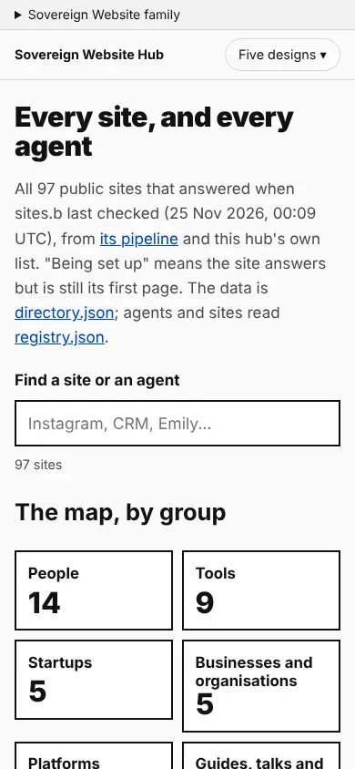

Synthetic users: the hub, round 14 (/directory/, groups folded)
Site: https://hub.sovereignweb.site/directory/ at a851c4e (v0.1.75): the same directory with each group folded behind its own heading. Run: 25 November 2026, about 01:33 UTC, by design.b.rounds, asked by design.b. Same personas and questions as round 13. The review.
| Question | Round 13 | Round 14 |
|---|---|---|
| Can you find a site about a musician, and who looks after it, in under thirty seconds? | 0 of 5 | 0 of 5 |
| Would you want one? | 1 of 5 | 2 of 5 |
| Look | 3.0 | 2.6 |
All five gave the same reason: "no musician marked and no keeper shown". The People group shows a name, a status, the group and an address on each row; nothing says musician and nothing says who looks after it. "music" still finds "0 of 97". New this round: three found the folded groups hide every example ("The first thing I see is a count of 97 sites in boxes, not one good-looking example"), and two read the intro as engineers' notes ("'directory.json', 'registry.json', 'sites.b' and 'its pipeline'").
What helped first: the search box, straight under the intro, then the People tile.
Method: Synthetic users, phone first, then desktop; asked not to name any person. Simulations, never a replacement for the measured checks or a real person.
